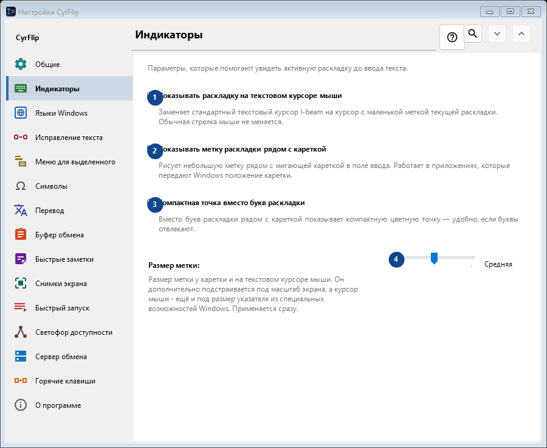
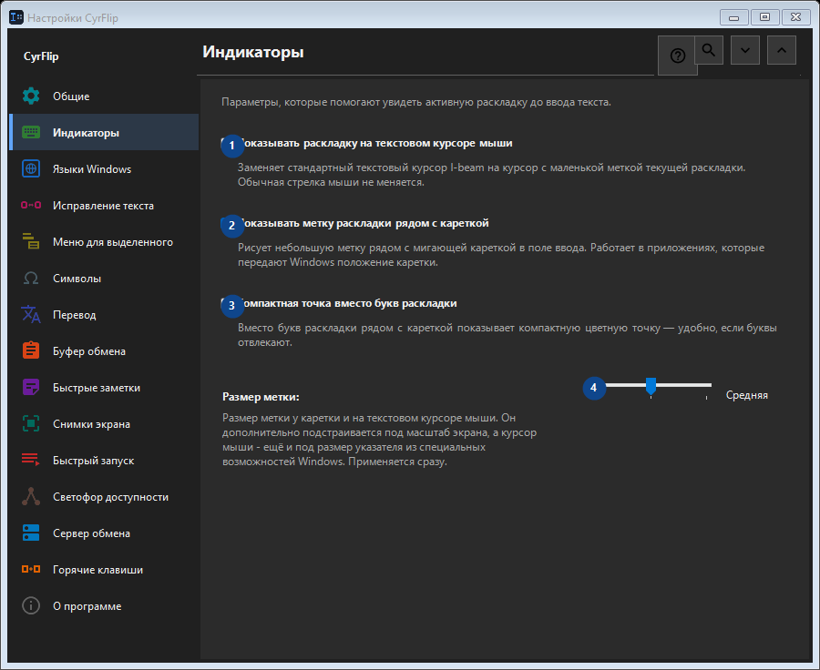

Индикаторы
Для чего это окно
Параметры, которые помогают увидеть активную раскладку до ввода текста.


Порядок действий
Настройки применяются сразу. Обязательного порядка нет; используйте группы ниже.
Элементы
1. Показывать раскладку на текстовом курсоре мыши
Заменяет стандартный текстовый курсор I-beam на курсор с маленькой меткой текущей раскладки. Обычная стрелка мыши не меняется.
Ваши сочетания клавиш2. Показывать метку раскладки рядом с кареткой
Рисует небольшую метку рядом с мигающей кареткой в поле ввода. Работает в приложениях, которые передают Windows положение каретки.
Ваши сочетания клавиш3. Компактная точка вместо букв раскладки
Вместо букв раскладки рядом с кареткой показывает компактную цветную точку — удобно, если буквы отвлекают.
Ваши сочетания клавиш4. Размер метки
Выберите или введите значение для соседней подписи. Проверьте его перед продолжением.
Ваши сочетания клавиш